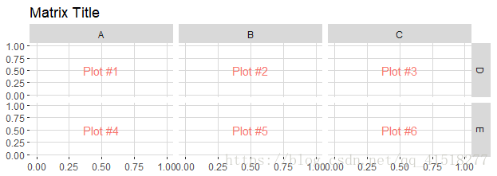
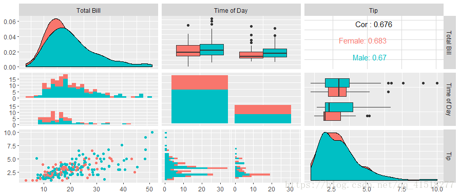
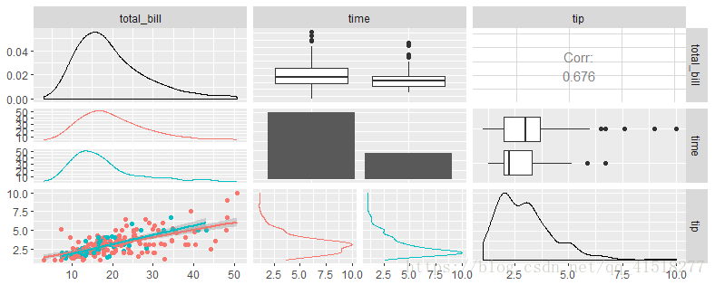
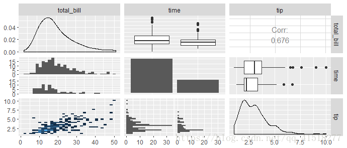
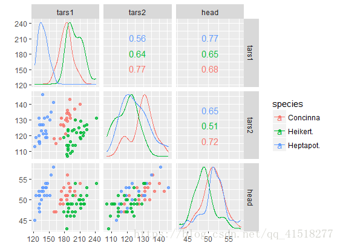

GGally
GGally通过添加几个函数来扩展ggplot2，以降低geom与转换数据组合的复杂性。其中一些功能包括配对图矩阵，散点图矩阵，平行坐标图，生存图，以及绘制网络的几个函数。
ggmatrix: ggplot2矩阵
用法
ggmatrix()
参数:
- plots: 将要列入矩阵的图形列表
- nrow, ncol: 行数和列数
- xAxisLabels, yAxisLabels: # x标签和y标签。设置NULL为不显示
- title, xlab, ylab: 标题，x标签和y标签。设置NULL为不显示
- byrow: 布尔值，用于确定图应该按行还是按列排序
- showStrips: 布尔值来确定是否应显示每个图块。NULL将仅默认为顶部和右侧地块。
- showAxisPlotLabels, showXAxisPlotLabels, showYAxisPlotLabels: 布尔值，用于确定绘图轴标签是否打印在绘图矩阵的X（底部）或Y（左侧）部分。
plotList <- list()
for (i in 1:6) {
plotList[[i]] <- ggally_text(paste("Plot #", i, sep = ""))
}
pm <- ggmatrix(
plotList, #将要列入矩阵的图形列表
nrow = 2, ncol = 3, # 行数和列数
xAxisLabels = c("A", "B", "C"), #x标题。设置NULL为不显示
yAxisLabels = c("D", "E"),
by
title = "Matrix Title"
)
pm
pm <- pm + theme_bw() #可以添加ggplot2主题
p2 <- pm[1,2] #也可以提取子集使用
p3 <- pm[1,3]

ggpairs: ggplot2广义配对图
选定列映射
data(tips, package = "reshape")
pm <- ggpairs(tips, mapping = aes(color = sex),
columns = c("total_bill", "time", "tip"),columnLabels = c("Total Bill", "Time of Day", "Tip"))
pm

矩阵部分 成对矩阵有三个主要部分: lower，upper，和diag。lower和upper包含三个类型: continuous，combo，和discrete。diag只包含continuous或者discrete。
- continuous: X和Y都是连续变量
- combo: 一个是离散的，而另一个是连续的
- discrete: X和Y都是离散变量
要对每个部分进行调整，需要提供一个信息列表。该列表可以由以下元素组成:
- continuous:
- 表示ggally_NAME函数尾部的字符串或自定义函数
- 当前有效的
upper$continuous和lower$continuous字符串: 'points'，'smooth'，'density'，'cor'，'blank' - 当前有效的
diag$continuous字符串: 'densityDiag'，'barDiag'，'blankDiag'
- combo:
表示ggally_NAME函数尾部的字符串或自定义函数。（不适用于diag列表）
当前有效的
upper$combo和lower$combo字符串: 'box'，'dot'，'facethist'，'facetdensity'，'denstrip'，'blank' - discrete:
- 表示ggally_NAME函数尾部的字符串或自定义函数
- 当前有效的
upper$discrete和lower$discrete字符串: 'ratio'，'facetbar'，'blank' - 当前有效的
diag$discrete字符串: 'barDiag'，'blankDiag'
- mapping: 如果提供了映射，则只会覆盖该部分的映射
library(ggplot2)
pm <- ggpairs(
tips, columns = c("total_bill", "time", "tip"),
lower = list(
continuous = "smooth",
combo = "facetdensity",
mapping = aes(color = time)
)
)
pm

自定义函数 这些ggally_NAME函数不提供所有图形选项。一个自定义函数可以代替供给字符串到continuous，combo或discrete内的元件upper，lower或diag。
自定义函数应该遵循: 只要返回一个ggplot2对象即可
custom_function <- function(data, mapping, ...){
# produce ggplot2 object here
}
my_bin <- function(data, mapping, ..., low = "#132B43", high = "#56B1F7") {
ggplot(data = data, mapping = mapping) +
geom_bin2d(...) +
scale_fill_gradient(low = low, high = high)
}
pm <- ggpairs(
tips, columns = c("total_bill", "time", "tip"),
lower = list(
continuous = my_bin
)
)
pm

函数包装 上面的例子使用每个子图的默认参数。要更改默认的参数binwidth设置，我们将使用wrap函数。wrap第一个参数是一个字符串或一个自定义函数。提供给wrap的其余参数将在运行时提供给函数。
pm <- ggpairs(
tips, columns = c("total_bill", "time", "tip"),
lower = list(
combo = wrap("facethist", binwidth = 1),
continuous = wrap(my_bin, binwidth = c(5, 0.5), high = "red")
)
)
pm
取矩阵子集和添加主题
p <- pm[3,1] # 取子集
p <- p + aes(color = time)
p + theme_bw() #添加主题
ggscatmat: 纯粹定量变量的传统散点图矩阵
ggscatmat(data, columns = 1:ncol(data), color = NULL, alpha = 1, corMethod = "pearson")
比ggpairs更快，因为需要做出更少的选择。它创建了一个矩阵，其中包含对角线下的散点图，对角线的密度图以及对角线上的相关系数。
data(flea)
ggscatmat(flea, columns = 2:4, color="species", alpha=0.8)

其余函数待更新